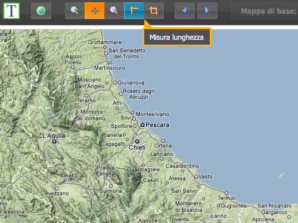
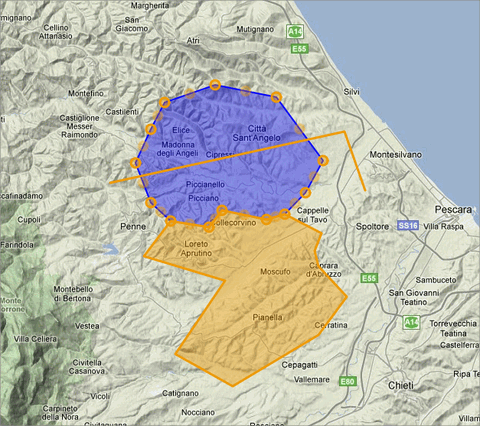

28 marzo, 2012 | di Alessio Di Lorenzo
Su TANTO abbiamo scritto in varie occasioni di jQuery e abbiamo visto vari esempi delle sue potenzialità nella creazione di interfacce efficaci ed esteticamente valide per le applicazioni web.
Esistono tantissime estensioni per questo popolare framework ed una delle mie preferite è sicuramente jqGrid, utilissima per chi sviluppa applicazioni web in ambito geospaziale.
La sua utilità nel nostro campo è presto detta: un’applicazione GIS, che sia desktop o web, non consiste solo della mappa, ma deve dare anche la possibilità a chi la usa di esplorare le informazioni associate agli elementi visualizzati, cioè gli attributi. jqGrid assolve benissimo il compito.
Gli esempi sul sito ufficiale offrono una buona carrellata delle possibilità del plugin e, insieme al dettagliato wiki, permettono di produrre le prime griglie in tempi brevi.
I formati di dati che jqGrid è in grado di importare e rappresentare sono molti e, tra questi, quello che ci interessa in particolar modo oggi è JSONP (JavaScript Object Notation with Padding).
In breve, si tratta di una tecnica che supera le restrizioni della same origin policy e permette di effettuare chiamate tra domini differenti. E’ bene sapere, comunque, che questa è una regola di sicurezza che, impedendo di eseguire script provenienti da siti esterni e “non fidati”, protegge l’utente da attacchi informatici detti XSS (Cross Site Scripting).
Ricorrere a JSONP è una delle strategie disponibili per aggirare questa politica, che risulta parecchio limitante per le applicazioni web che, come i Mash-up spaziali spesso citati su TANTO, fanno uso di dati provenienti da più fonti.
Il trucco si basa sulla capacità del tag html script di caricare file javascript, anche esterni e, all’occorrenza, eseguire del codice. Non mi dilungo oltre sull’argomento e rimando a wikipedia e a questo articolo su HTML.it per eventuali approfondimenti.
Vediamo subito un esempio. Come fonte di dati prendiamo il risultato di un query task lanciato verso un MapService ReST di ArcGIS Server. Il codice per ottenere la griglia di attributi è molto semplice e il risultato di sicuro effetto.
$('#grid').jqGrid({
url: 'http://sampleserver1.arcgisonline.com/ArcGIS/rest/'+
'services/Demographics/ESRI_Census_USA/MapServer/4/query',
datatype: 'jsonp',
postData: $.param({
where: "1=1",
returnGeometry: false,
outFields: "ObjectID,NAME,STATE_NAME,CNTY_FIPS",
f: "json"
}),
colModel: [
{name: 'ObjectID', label: 'ID', width: 60, jsonmap: 'attributes.ObjectID',sorttype:'number'},
{name: 'NAME', label: 'Name', width: 170, jsonmap: 'attributes.NAME'},
{name: 'STATE_NAME', label: 'State', width: 150, jsonmap: 'attributes.STATE_NAME'},
{name: 'CNTY_FIPS', label: 'FIPS', width: 60, jsonmap: 'attributes.CNTY_FIPS'}
],
caption:"ArcGIS Server 10 query",
toppager: false,
pager:"#pager",
rowList: [50, 100, 250, 1000],
rowNum: 50,
jsonReader: {
root: 'features',
repeatitems: false,
},
loadonce: true,
ignoreCase: true,
viewrecords: true,
height: '300',
width:'500'
}).jqGrid('navGrid', '#pager', {search:false, add: false, edit: false, del: false});
});
Il codice è volutamente semplice e ovviamente si può sostituire il valore della clausola where, qui passata come parametro e valorizzata con 1=1, con qualcosa di più utile (o dinamico).
Qui sotto potete vedere l’output della query in una tabella dinamica che offre la possibilità di consultare in modo ricco ed interattivo la nostra sorgente di dati spaziali d’esempio
Posted in Strumenti | No Comments »
25 aprile, 2010 | di Alessio Di Lorenzo
Tempo fa scrissi un articolo su ArcGIS Server 9.3 soffermandomi sui servizi REST e le API Javascript ed accennando al fatto che ESRI mette a disposizione delle estensioni per le API di Google Maps e per quelle di Bing Maps.
Ultimamente ho lavorato un po’ con le prime e ne ho avuto complessivamente una buona impressione. Tuttavia, durante lo sviluppo, ho riscontrato un problema nella misurazione delle distanze e delle aree che merita di essere messo in evidenza, soprattutto perché gli esempi della documentazione ESRI non lo fanno a dovere ed anzi, secondo me, risultano leggermente fuorvianti.
Terminata la premessa, prima di andare avanti con l’articolo, voglio ringraziare Domenico Ciavarella, che mi ha dato un supporto fondamentale per arrivare ad una soluzione che altrimenti starei ancora cercando.
La proiezione di Google Maps

Effetto di distorsione delle aree
Google Maps, Bing Maps ed altri provider (come OpenStreetMap, Yahoo e, di recente, la stessa ESRI) utilizzano una proiezione nota come Spherical Mercator, derivata dalla proiezione di Mercatore. Il codice EPSG ufficiale è 3785, anche se prima della sua definizione molti software hanno utilizzato l’ufficioso 900913. L’identificativo per i software ESRI, tra cui ovviamente ArcGIS Server, è invece 102113.
Questa proiezione considera la Terra come una sfera e consente di includerne completamente la superficie all’interno di un quadrato.
Quando però si rappresenta una superficie curva su di un piano, come un foglio di carta o il monitor di un computer, si introducono delle deformazioni. In questo caso, man mano che ci si allontana dall’equatore le aree cartografate subiscono un pesante stiramento sia in senso verticale che orizzontale e diventano, quindi, via via più esagerate verso i poli (la Groenlandia, per esempio, sembra più grande dell’Africa). Questa proiezione evidentemente non è fatta per minimizzare la deformazione delle aree (la proiezione di Mercatore è conforme infatti), ma risulta vantaggiosa per l’uso attraverso il web perché consente di applicare un modello efficiente di tassellamento e caching.
Il problema…
Ammettiamo di voler creare un’applicazione di webmapping con le sopracitate estensioni delle API Javascript di ArcGIS Server per Google Maps.
La prima cosa da fare è creare un mapservice in grado di esporre i nostri dati spaziali con la medesima proiezione delle basi cartografiche di Google. Come spiegato nel post dedicato ad ArcGIS Server (linkato all’inizio di questo articolo) un mapservice “aggancia” e pubblica un progetto redatto in ArcMap (il classico .mxd), quindi basta assegnare al dataframe del progetto il sistema di riferimento appropriato (che si trova nella lista dei sistemi proiettati, alla voce WGS 84 Web Mercator, con identificativo 102113), salvare il tutto e pubblicarlo con ArcGIS Server. Niente di difficile insomma.
Focalizziamoci ora sullo sviluppo del client: tra i tanti strumenti che oggi ci si aspetta di trovare in una applicazione WebGIS ci sono i “righelli” che consentono di disegnare spezzate e poligoni e di misurarne poi lunghezza ed area. ESRI lo sa, ed ha giustamente incluso un esempio per mostrare come creare questi tool nella documentazione delle sue API.
Abbiamo detto però che l’uso della proiezione Spherical Mercator provoca una deformazione crescente man mano che ci si spinge verso i poli e, tracciando una spezzata per misurare un oggetto al suolo di dimensioni note, come uno stadio di calcio, ci si accorge dell’inghippo: è più lungo di quanto dovrebbe essere (circa 146 metri invece di 105-110).
L’esempio fornito da ESRI non considera la deformazione e può indurre gli sviluppatori all’errore. E’ vero che una persona con le adeguate conoscenze di geomatica può arrivare ad intuire il rischio insito nell’uso della proiezione di Google, ma è anche vero che il webmapping è terra di confine tra “gissologi” e sviluppatori informatici “puri”, senza particolari cognizioni tipiche del mondo gis. Non è per nulla detto, quindi, che chi sviluppa abbia i mezzi per immaginare il problema prima di averci sbattuto il muso e personalmente credo che aver pubblicato un esempio del genere nella documentazione ufficiale, senza neanche accennare alla questione della deformazione, sia stata una leggerezza.
…e la soluzione
Non molto tempo fa sul blog di ArcGIS Server è comparso un interessante post che mette in evidenza il problema della misurazione delle distanze e spiega come comportarsi per risolverlo.
Il servizio che in ArcGIS Server è incaricato di calcolare lunghezze ed aree, il Geometry Service, è in grado di svolgere diverse altre operazioni, tra cui la proiezione al volo delle geometrie.
Il “trucco” consiste nel riproiettare la geometria tracciata dall’utente nel sistema di riferimento più adatto alla zona mappata prima di effettuarne la misurazione e stampare a schermo il risultato.
Purtroppo lo snippet di codice fornito da ESRI è pronto all’uso solo per le API Javascript, mentre per le estensioni di Google Maps bisogna fare da soli e il discorso è un po’ meno semplice.
Al posto di questa funzione:
var sr = new esri.SpatialReference({wkid:32610});
geometryService.project([graphic], sr, function(projectedGraphic) {
geometryService.areasAndLengths(projectedGraphic, function(result) {
var perimeter = result.lengths[0];
var area = result.areas[0];
});
});
abbiamo bisogno di questa:
var geometryService = new esri.arcgis.gmaps.Geometry("http://sampleserver1.arcgisonline.com/ArcGIS/rest/services/Geometry/GeometryServer");
function calculateLengths() {
//Parametri per la riproiezione
var params = new esri.arcgis.gmaps.ProjectParameters();
params.geometries = [polyline];
params.inSpatialReference = 4326;
params.outSpatialReference = 3004; //Gauss-Boaga fuso Est
//Riproiezione e funzione di callback
geometryService.project(params, getLengths);
}
function getLengths(projectResults){
var url = "http://sampleserver1.arcgisonline.com/ArcGIS/rest/services/Geometry/GeometryServer/lengths";
var parameters = {
polylines: projectResults.geometries,
sr: 3004
};
esri.arcgis.gmaps.JSONRequest(url, test, parameters);
}
function test(result) {
alert(result.lengths[0]+" m");
}
Ho realizzato un veloce esempio che mostra i risultati ottenuti dal codice proposto da ESRI nella propria documentazione a confronto con quelli ottenuti dalla riproiezione con il Geometry Service e dalle semplici API di Google Maps, che hanno dei metodi propri per la misura di linee e poligoni.
Posted in Didattica | 4 Comments »
1 marzo, 2010 | di Alessio Di Lorenzo
Era da un po’ che avevo in mente di dedicare un articolo a jQuery, finalmente – complici l’influenza che mi ha tenuto a riposo forzato e l’ispirazione tratta da Linfiniti – sono riuscito nell’intento.
Per chi non lo sapesse, jQuery è un framework Javascript open source molto potente, caratterizzato da una sintassi snella e di facile comprensione.
Il framework è rilasciato con doppia licenza: MIT e GPL.
I motivi per usare jQuery nei propri progetti non mancano di certo: comunità attiva, disponibilità di molti temi e ottimi plugin, compatibilità e leggerezza sono i primi che mi vengono in mente.
In questo articolo vedremo come costruire una mappa online sfruttando jQuery UI e OpenLayers.
Il risultato della “fusione” è un client dotato di funzionalità di base come zoom, pan, misurazione delle distanze e vari layer di sfondo intercambiabili.
Si tratta, in pratica, di un template da cui partire per sviluppare applicazioni di web-mapping vere e proprie.

Per creare il client dell’esempio abbiamo bisogno di:
Ho già raccolto il tutto in questo archivio .zip. Qui dentro, oltre alle librerie, si trova la totalità dei file che compongono il client. Vi basta quindi cliccare sul link per avere il template sul vostro computer, pronto all’uso e/o ad essere trasformato come volete.
Vi invito però a dare lo stesso un’occhiata alla pagina di download di jQuery UI: noterete che è possibile modificare radicalmente il pacchetto prima di scaricarlo. Potete includere le sole componenti utili ai vostri scopi e scegliere tra vari temi già pronti o uno composto da voi con ThemeRoller.
Io ho fatto solo qualche semplice modifica al tema UI-Darkness (in questo periodo non mi piacciono i bordi arrotondati…) ma, come dicevo, si può fare molto di più. Provare per credere.
Ora un po’ di anatomia.
Scompattato l’esempio, è bene posare lo sguardo su alcune delle directory e dei file compresi al suo interno.
jsLib
E’ la directory contenente tutte le librerie elencate in precedenza, necessarie al funzionamento del template.
index.html
Nella sezione header sono referenziate le librerie utilizzate, i fogli di stile e i file javascript.
Nel body è possibile notare che l’attributo class di molti degli elementi della pagina (div, button, span, ecc.) è parecchio popolato. Questo è il metodo con cui jQuery UI e jQueryUI.Layout si “ancorano” alla pagina web.
Per comprendere meglio vi rimando alla pagina degli esempi di jQuery UI.Layout e a questo articolo che spiega in maniera egregia la composizione della toolbar e dei suoi pulsanti.
jsFunc/mappa.js
Contiene la mappa realizzata con OpenLayers.
Nella funzione di inizializzazione (initMap) richiamata al caricamento della pagina, ci sono, tra le altre cose, i controlli collegati ai bottoni della toolbar.
jsFunc/layout.js
In questo script, con poco più di 40 righe di codice, jQuery UI e i suoi plugin definiscono Il layout dell’applicazione, il tema, il comportamento e l’aspetto di bottoni e tooltip.
Css/style.css
A parte qualche piccola “frivolezza” come queste (a mio giudizio) bellissime icone, in questo foglio di stile sono descritte le regole fondamentali per la corretta presentazione del layout e della toolbar creati tramite jQuery UI.
Ecco, questo è grossomodo ciò che bisogna sapere per iniziare a studiare i mille modi di mescolare le potenzialità di jQuery a quelle di OpenLayers.
Fondamentale, come sempre, è il ricorso alla documentazione ufficiale dei vari progetti e al supporto offerto dalla comunità.
Per chiudere segnalo anche due guide in italiano, estremamente ben fatte ed utilissime per avvicinarsi a jQuery e jQuery UI. Entrambe sono firmate HTML.it:
Guida a jQuery
Guida a jQuery UI
Posted in Didattica | 10 Comments »
21 settembre, 2009 | di Alessio Di Lorenzo
Ultimamente mi è stato richiesto un applicativo di webmapping che mettesse chiunque (o quasi…) in condizione di gestire agevolmente un geodatabase, aggiornando nel tempo le informazioni contenute, comprese le feature geografiche. In due parole: un gestionale web, ma con delle funzionalità proprie dei GIS desktop.
Il committente ha richiesto una soluzione open source ed io sono stato ben contento di proporre il rodato quartetto composto da UMN-Mapserver, PostGIS, PHP e MapFish.
In passato avevo già realizzato qualcosa di simile, ma si trattava di inserire dei punti a partire da una coppia di coordinate, operazione semplicissima grazie a PostGIS. Questa volta era necessario che l’utente disegnasse le geometrie online, direttamente nella finestra del browser, ed ho colto l’occasione per dare finalmente un’occhiata alle funzioni di editing vettoriale di OpenLayers 2.8. Ne sono rimasto estremamente soddisfatto, come sempre avviene quando si tratta di OpenLayers.
Scorrendo la pagina degli esempi ed inserendo il filtro “vector”, ci si rende subito conto della potenza dei controlli dedicati all’editing.
Grazie agli esempi, che coprono quasi tutto lo spettro delle possibilità, è stato facile produrre la parte client del mio lavoro.
L’editor ottenuto è adattabile a qualsiasi back-end “spatial enabled”, è indipendente dal mapserver scelto per pubblicare i dataset online, dal geodbms usato per contenerli e dal linguaggio di programmazione lato server.
Il cuore del client è costituito dalle funzioni presentate in questo esempio, che consentono di disegnare una feature da serializzare sotto forma di stringa in ben 6 formati standard differenti. Ottenuta la stringa, il gioco è fatto: uno script lato server si occupa di recuperarla e lanciare una query di inserimento nel geodabase (ci sono, come sempre, anche altre soluzioni).
L’operazione inversa, vale a dire deserializzare una stringa ed ottenere una feature, è ugualmente possibile e può essere molto utile.
Per esempio, volendo rifinire degli shapefile su una base Google Maps o Openstreetmap, basta trasformarli KML (o in uno degli altri 5 formati supportati), aprire il file con un editor di testo e, infine, copiare ed incollare il contenuto dentro la textarea del nostro editor. A questo punto si è liberi di modificare a piacimento le feature importate.
Questo è solo un esempio grezzo di import, dispobile “out of the box”, ma una volta collegato l’editor ad un back-end spaziale si può dare sfogo alla fantasia e creare delle funzioni di importazione più raffinate.

Cliccando qui potete vedere una versione super-generica del client di editing da me realizzato. Ho usato MapFish 1.1[1] per dare un aspetto un po’ più carino[2] al tutto ed ho modificato il codice degli esempi affinché le diverse funzioni di editing potessero essere attivate da una toolbar invece che da una serie di checkbox e radiobutton. I commenti nel codice dovrebbero essere abbastanza esplicativi.
[1] Si tratta di una versione leggermente modificata in cui ho sostituito OpenLayers 2.7 con OpenLayers 2.8
[2] Qualcuno potrebbe cimentarsi con Dojo o jQuery… sono sicuro che non verrebbe affatto male 
Nota
Devo scusarmi con i lettori di TANTO iscritti al feed RSS.
Stamattina ho accidentalmente cliccato sul bottone “Pubblica” mentre scrivevo la bozza e nonostante mi sia precipitato a recuperare, non sono riuscito ad evitare che l’articolo incompleto finisse nel feed. Per farmi perdonare mi sono incollato al computer ed ho fatto il possibile per finire l’articolo e la demo alla svelta! In futuro starò più attento a dove clicco e soprattutto non inizierò a scrivere bozze di domenica mattina prima di colazione! 
Posted in Strumenti | 19 Comments »
2 agosto, 2009 | di Alessio Di Lorenzo
 Posso dire di essere un sostenitore dell’open source e senza dubbio preferisco avere a che fare con software, tecnologie e formati aperti. Al movimento del software libero sono molto legato, per alcuni versi ne faccio parte e, quando posso, cerco di dare i miei microscopici contributi qui e la.
Posso dire di essere un sostenitore dell’open source e senza dubbio preferisco avere a che fare con software, tecnologie e formati aperti. Al movimento del software libero sono molto legato, per alcuni versi ne faccio parte e, quando posso, cerco di dare i miei microscopici contributi qui e la.
Il mio mondo (digitale) ideale è un mondo in cui tutto il software è libero e, soprattutto, in cui le persone si scambiano dati e servizi in formati standard e liberi.
Il mondo reale, però, è fatto anche di altro e quando c’è da portare a casa la proverbiale pagnotta è bene tenerlo a mente. Inoltre penso che sia un preciso dovere, per un buon analista, essere sempre aggiornato sulle soluzioni esistenti indipendentemente dalla licenza che le accompagna.
In questo articolo racconterò quindi le impressioni che ho avuto durante le mie prime due settimane di lavoro con ArcGIS Server 9.3. Inizio subito col dire che partivo prevenuto nei confronti di questa piattaforma, date le allucinanti esperienze con ArcIMS, ma devo ammettere di essere rimasto piacevolmente sorpreso!
Che cos’è?
Bene, mi tocca entrare nel vivo e dare una definzione di massima che aiuti a capire meglio di cosa stiamo parlando.
Senza scendere troppo nel dettaglio tecnico, possiamo dire che ArcGIS Server è un ambiente che permette di pubblicare geowebservices sulla base dei quali si potranno poi sviluppare applicazioni di web-mapping.
Su questo fronte lo spettro di possibilità offerte da ArcGIS Server 9.3 agli sviluppatori GIS è davvero ampio. Si va dagli ADF (Advanced Development Framework) per gli ambienti .NET e Java, alle API Javascript, Flex e – di recente – Silverlight.
C’è anche un wizard che permette di pubblicare un’applicazione web senza grosse pretese di originalità e nel giro di qualche click, pur non avendo alcuna conoscenza di programmazione.
Come funziona?
Innanzitutto si deve installare!
Non ho avuto modo di provare l’installazione in ambiente GNU/Linux, ma in ambiente Windows la procedura non si discosta da quella classica che caratterizza la maggior parte dei programmi. Di certo avete presente il tipico: “Avanti → Avanti → Ok”…
Ultimata l’installazione vera e propria, vengono richieste delle informazioni utili alla configurazione dell’ambiente e, infine, si procede con l’autenticazione della licenza.
Al riavvio potremo finalmente effettuare il login in ArcGIS Server Manager, un applicativo di amministrazione da browser, oppure, se preferiamo, connetterci all’istanza di ArcGIS Server usando ArcCatalog.
A questo punto siamo pronti per tirarci su le maniche e creare servizi di vario tipo (mapservice, dataservice, gisservice, geoprocessing e geocoding service).
Consideriamo per esempio il mapservice, un tipo di servizio che serve ad esporre una mappa composta da uno o più layer, sui quali si possono eseguire delle operazioni (task) come find, query e identify.
Pubblicare un mapservice è decisamente semplice. Basta avere un progetto redatto in ArcMap (un normale file .mxd) ed effettuare delle semplici scelte per la configurazione del servizio.
Oltre al servizio proprietario ESRI, sono a disposizione vari standard: KML, WMS, WFS-T e WCS.
Sviluppo client con REST e Javascript
ArcGIS Server 9.3 offre, out-of-the box, la possibilità di esporre i servizi secondo il paradigma REST.
Questa, insieme alle API Javascript basate sull’ottimo toolkit open source Dojo, è probabilmente la novità di maggior rilievo di ArcGIS Server 9.3.
Imparare a sfruttare questi mezzi equivale ad aprirsi la possibilità di sviluppare delle applicazioni web 2.0 che, col solo codice lato-client, offrono la maggior parte delle caratteristiche che normalmente ci si aspetta di trovare in una applicazione di web-mapping.
Qui ci sono alcuni esempi che sicuramente vale la pena di esplorare per rendersi conto delle potenzialità delle API.
E’ interessante, inoltre, che l’ultima versione di OpenLayers, la 2.8, permetta di utilizzare anche i layer REST di ArcGIS Server 9.3.
Se volete saperne di più sull’argomento vi consiglio caldamente questo video!
Pro e contro
Siamo alla fine del post ed è ora di fare un bilancio.
Prima le cattive notizie: il supporto, non me ne vogliano in ESRI Italia, è assolutamente inadeguato!
Se si naviga tra EDN e Resource Gateway o si bazzica la comunità internazionale sul forum, in fin dei conti non è proprio malaccio (anzi, sul forum ci sono utenti molto preparati e dispobili grazie ai quali ho risolto alcuni piccoli intoppi).
Però chi ha acquistato un prodotto in Italia, pagandolo profumatamente, tollera con un po’ di mal di pancia che il supporto locale non sappia nemmeno dare un aiuto di tipo “getting started” se ci si vuole discostare dall’uso del wizard o dello sviluppo con l’ADF Java o .NET.
Personalmente, ho telefonato 3 volte al supporto ponendo delle domande tecniche precise e non ho mai ricevuto una risposta utile dall’interlocutore (quasi sempre: “apra un ticket”). Oggi, con poche settimane di esperienza di sviluppo con queste API alle spalle, mi rendo conto che le mie domande erano davvero molto semplici, il che mi porta a pensare che quello dello sviluppo con le API Javascript, in ESRI Italia, sia un tema molto trascurato.
Comunque devo essere onesto e dire che in altre occasioni ho trovato utilissimo (spesso risolutivo) il supporto di ESRI Italia. Questo mi fa ben sperare per il futuro nel caso in cui a Roma decidano di dedicare un po’ di attenzione anche quei balordi (come il sottoscritto) che si sono fissati col Javascript!
Passiamo ai pro che, invece, sono tanti:
- scalabilità dell’architettura
- semplicità nella configurazione e nello sviluppo degli applicativi
- versatilità delle API e possibilità di creare Mash-Up praticamente con tutto
- buon supporto agli standard del settore
Basta con le chiacchiere!
Cliccando qui, potete vedere un piccolo esempio live da me realizzato.
Divertitevi (si fa per dire…) a fare lo stesso… e condividete il risultato! 
Posted in Strumenti | 27 Comments »